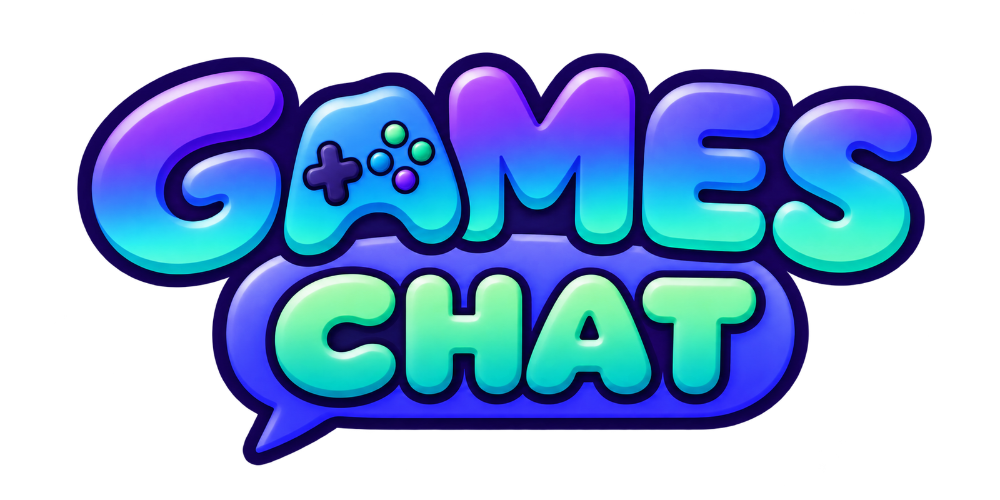

mini.
A little shelf of browser games. Pick one up and play.
Fibre Art
A shifting collage after the quilts, tapestries and paintings of Hanneke de Neve. Every stick and button moves something in the picture, some a little and some a lot: find the big ones, set them up, and carry the picture somewhere new. One to four players.
Play →The Ice-Cream Cone Coot
A field guide of rare birds from Arnold Lobel's book, each one a household object. Stack scoops, pour tea, snap pictures and more, and set new world records.
Play →
Games Chat
Video chat with 75 silly face effects and 360° worlds, and 20 minigames to play together, from mini golf to trivia.
Play →Bronze Drum
Beat drum commands to lead the Trưng sisters' army, staged as a backlit paper-cut theatre.
Play →Widow's Bay
A toy-theatre voyage set to Langan, Frost & Wane's song, in stencil-tinted Méliès colour.
Play →Hopper the Grasshopper
A controller-first platformer. Jump, ride and blast through fields, foundries and stranger places.
Play →Tank Wars
Top-down tank battles against the CPU or friends: couch play with controllers, or online rooms for up to eight.
Play →Prototypes
Still on the workbench: playable, but not quite what we hoped for yet.
One Monster After Another
Sally Ann's letter goes from monster to monster, after Mercer Mayer's book. Play each one as it snatches the letter: sneak, swoop, lurk, ram and chase, alone or two players head to head.
Play →Gliders
Glide through floating block skies as a flying squirrel, a Microraptor or a flying fish. Fly close, bank big, and beat your friends in split screen.
Play →